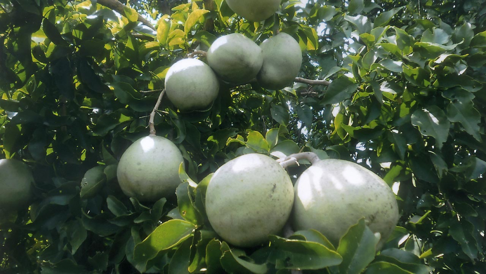
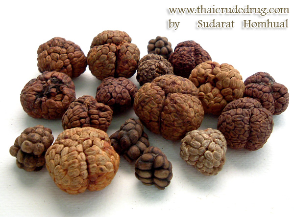

สมุนไพรไทย 22 ชนิดเสี่ยงสูญพันธุ์ ประกาศคุ้มครองและควบคุม 7 ชนิด

สธ. ประกาศรายชื่อ “สมุนไพรไทย” 22 ชนิดเสี่ยงสูญพันธุ์ เหตุเติบโตช้า เมื่อใช้ต้องใช้ทั้งต้น หรือทั้งราก หรือใช้บ่อยจึงรักษาได้ คัดเลือกสมุนไพร 7 ชนิด ออกประกาศคุ้มครองและควบคุม ผู้ครอบครองต้องแจ้งจำนวนที่มี เพื่อทำแผนการใช้และการปลูกทดแทน
นายนันทศักดิ์ โชติชนะเดชาวงศ์ ผู้อำนวยการกองคุ้มครองภูมิปัญญาการแพทย์แผนไทยและพื้นบ้านไทย กรมพัฒนาการแพทย์แผนไทยและการแพทย์ทางเลือก กระทรวงสาธารณสุข (สธ.) กล่าวว่า ขณะนี้มีสมุนไพรไทย 22 ชนิด ที่เสี่ยงอาจจะสูญพันธุ์ได้ ประกอบด้วย
“ตามปกติแต่ละจังหวัดจะมีการจดทะเบียนรายชื่อสมุนไพรที่มีอยู่ในจังหวัดนั้นๆ แบ่งออกเป็น 3 ประเภท คือ 1.สมุนไพรเพื่อการศึกษา 2. สมุนไพรพืชเศรษฐกิจ และ 3. สมุนไพรเสี่ยงอาจสูญพันธุ์ โดยจะมีคณะผู้เชี่ยวชาญเข้ามาจัดทำข้อมูลของสมุนไพรทั้ง 3 ประเภท จากนั้นได้เลือกออกมาเป็น 22 ชนิด ที่เสี่ยงอาจจะสูญพันธุ์ เนื่องจากเป็นสมุนไพรที่เติบโตช้า เมื่อจะใช้ต้องใช้ทั้งต้น บางชนิดใช้ทั้งราก และต้องใช้บ่อยจึงจะสามารถรักษาอาการได้” นายนันทศักดิ์ กล่าว
นายนันทศักดิ์ กล่าวว่า คณะกรรมการคุ้มครองและส่งเสริมภูมิปัญญาการแพทย์แผนไทยได้ประชุมหารือกัน โดยเลือกสมุนไพร 6 ชนิดจาก 22 ชนิดขึ้นมา คือ ถั่วดินโคก หรือ พิษนาศน์ เทพทาโร มะตูมนิ่ม มะหาด เร่ว และ หัวร้อยรู นอกจากนี้ ยังเสนอสมุนไพร “กระวาน” ขึ้นมาเป็นพิเศษด้วยอีกชนิดหนึ่ง เพื่อประกาศคุ้มครองและเป็นสมุนไพรที่ต้องควบคุม โดยหากใครมีสมุนไพร 7 ตัวนี้อยู่ในครอบครองไม่ได้ถือว่ามีความผิด เพียงแต่ต้องแจ้งมาทาง สธ. ให้รับทราบว่ามีอยู่เท่าใด เพื่อที่จะจัดทำแผนส่งเสริมการปลูกต่อไป เช่น บริษัทใดมีสมุนไพร 7 นี้อยู่ ใช้ผลิตยาไปเท่าใด ต้องปลูกทดแทนเท่าใด เพื่อไม่ให้สูญพันธุ์ เป็นต้น
¯\_(ツ)_/¯ more information ¯\_(ツ)_/¯
รายละเอียดสมุนไพรไทย 22 ชนิด
ถั่วดินโคก
ข้อมูลเพิ่มเติม : http://www.phargarden.com
เทพทาโร

ที่มา : http://clgc.agri.kps.ku.ac.th
มะตูมนิ่ม
ที่มา : https://www.thairath.co.th
มะหาด
ที่มา : http://www.phargarden.com
เร่ว
ที่มา : http://www.thaicrudedrug.com
หัวร้อยรู

ที่มา : http://www.thaicrudedrug.com
กระทุ่มนา

ที่มา : http://clgc.agri.kps.ku.ac.th
ขันทองพยาบาท
ที่มา : http://www.phargarden.com
จุกโรหินี

ที่มา : https://medthai.com
ชะเอมไทย

ที่มา : http://www.phargarden.com
ชิงชี่
ที่มา : http://www.phargarden.com
ตับเต่า

ที่มา : http://www.qsbg.org
นางแย้มป่า

ที่มา : https://medthai.com
ปลาไหลเผือก

ที่มา : https://khaolan.redcross.or.th
พังคี

ที่มา : https://medthai.com
มะคังแดง
ที่มา : http://www.phargarden.com
สะค้าน

ที่มา : http://www.thaicrudedrug.com
สารภีป่า

ที่มา : https://www.dnp.go.th
อบเชยไทย

ที่มา : http://www.thaicrudedrug.com
เฉียงพร้านางแอ

ที่มา : http://www.phargarden.com
เถาเอ็นอ่อน

ที่มา : http://www.thaicrudedrug.com
เปราะหอม
ที่มา : http://www.thaicrudedrug.com